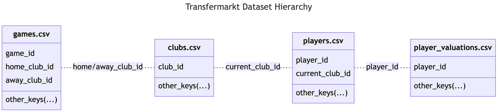

game_id home_club_id away_club_id
0 2222597 3725 232
1 2222627 2696 4128
2 2222658 2410 121Data Organization, Merging, and Concatenation
Mastering Data Integration in Sports Analytics
Abstract
In the world of sports analytics, data organization is the linchpin for insightful analysis. This lesson delves into essential techniques of data merging and concatenation, using a comprehensive football dataset from Transfermarkt as our study model. Explore how to effectively utilize inner, left, right, and full joins in R and Python to bring coherence to multifaceted sports data. Designed for sport and exercise science practitioners, this lesson demystifies complex data structures, enabling a seamless transition from raw data to actionable insights. Engage with practical demonstrations that showcase these techniques in action, empowering you to tackle sports data with confidence and clarity.
Keywords
Data integration, data normalization, data structure, data integrity, data analysis, merging, concatenation, R, dplyr, Python, pandas, football, Transfermarkt.
Lesson’s Level
The level of this lesson is categorized as BRONZE.
Lesson’s Main Idea
Effective data organization and merging techniques are crucial for creating comprehensive and insightful sports analytics datasets. Understanding how to join and concatenate data in R and Python empowers you to combine segmented datasets seamlessly, enhancing the depth and quality of your analysis.
Data used in this lesson is available on  , a go-to platform for data science.
, a go-to platform for data science.
1 Learning Outcomes
By the end of this lesson, you will have developed proficiency in:
Understanding Data Organization in Sports Analytics: Recognizing the importance of structured data organization in sports science, and how it impacts the accuracy and efficiency of data analysis.
Mastering Merging Techniques in R and Python: Gaining hands-on experience with key merging functions in
dplyr(R) andpandas(Python), allowing you to combine datasets seamlessly based on shared keys.Applying Various Merge Types for Comprehensive Analysis: Learning to choose and apply the most suitable merge type (inner, left, right, full) for different analytical scenarios in sports data, ensuring a holistic approach to dataset integration.
Implementing Concatenation for Time-Series Data: Utilizing concatenation techniques to unify segmented data, such as seasonal sports performance metrics, into a singular, coherent dataset for extensive analysis.
Enhancing Dataset Integrity Through Structured Merges: Developing the skills to maintain data integrity and reduce redundancy through effective data merging, which is essential for making informed decisions in sports analytics.
2 Introduction: Data Organization
2.1 Importance of Efficient Data Organization in Sports Analytics
In sport and exercise science, data provides the backbone for understanding and enhancing athletic performance. Accurate data analysis hinges on how well we organize this information. Efficient organization enables practitioners to swiftly locate and utilize data — from monitoring an athlete’s training load to analyzing team performance trends. However, the true value is realized when it’s time to bring these disparate pieces of data together. Merging different tables for analysis should be seamless, allowing for a comprehensive view that informs strategy and decision-making.
2.2 Data Normalization: Why Separate Tables Enhance Data Integrity And Reduce Redundancy
Data normalization is about smart storage — arranging your data across related tables to avoid unnecessary duplication and maintain consistency. Think of it as assigning each type of data a specific ‘locker’ within a well-organized gym. You store athlete profiles, performance stats, and health records separately, but when it’s time to develop a holistic training plan, you need to bring these elements together efficiently. This structure not only eliminates clutter (redundancy) but also ensures that each data point remains accurate and up-to-date (integrity). When you maintain clean, well-structured records, merging data becomes a straightforward task, paving the way for insights that can give athletes and teams a competitive edge.
Having outlined the essentials of data normalization, let’s now explore the powerful tools in R and Python designed to streamline the merging of our structured datasets.
2.3 Tools for Data Merging and Concatenation
2.3.1 dplyr package in R
The dplyr package in R is an essential tool for data manipulation tasks. It provides a set of functions, akin to data manipulation verbs, such as select, filter, mutate, arrange, and summarize. These functions allow us to perform complex data transformations with ease. For data merging, the package includes several join functions, which enable precise combinations of datasets based on specified columns using the ‘by’ argument.
2.3.2 pandas library in Python
The pandas library in Python stands out as a fundamental tool for data science, especially in handling and analyzing sports data. Its robust framework simplifies data manipulation through intuitive functions for selecting, filtering, and altering datasets. When it comes to merging data, pandas offers powerful functions like merge, which allow for the combination of different datasets by aligning them on common columns.
2.4 Overview of the Multi-Table Sports Dataset for This Case Study
For this lesson, we will be using a rich football dataset extracted from Transfermarkt, a comprehensive football database. The dataset is available on Kaggle, a go-to platform for data science. The selection of this dataset is particularly beneficial as it demonstrates how a comprehensive data collection can be efficiently stored across multiple interconnected tables, providing us a practical example of dataset structuring.
The dataset is split across several CSV files, but what is special is how they are all connected. They are linked by something called keys, which are unique identifiers, like a special tag. They help keep the data organized and allow us to combine information from different files. For example, the main tags like club_id and player_id are used in more than one file to show how they are related.
To demonstrate the relationships between the files, we are going to showcase just a few key columns and entries. This concise display is merely for illustration; you are encouraged to delve into the full depth of the data on your own.
Let’s start with the games.csv file. It lists all games, each with its own game_id. The teams playing are shown with home_club_id and away_club_id.
games <- read.csv("games.csv")
head(games[, c("game_id", "home_club_id", "away_club_id")], 3)import pandas as pd
games = pd.read_csv("games.csv")
games[['game_id', 'home_club_id', 'away_club_id']].head(3)The clubs.csv file contains information about football clubs, each having a club_id. Players in a club are connected using current_club_id.
clubs <- read.csv("clubs.csv")
head(clubs[, c("club_id", "name")], 3)clubs = pd.read_csv("clubs.csv")
clubs[['club_id', 'name']].head(3) club_id name
0 105 SV Darmstadt 98
1 11127 Ural Yekaterinburg
2 114 Besiktas JKNext, the players.csv file gives details about players. Every player has a player_id, and the club they play for is shown using current_club_id.
players <- read.csv("players.csv")
head(players[, c("player_id", "current_club_id", "current_club_name")], 3)players = pd.read_csv("players.csv")
players[['player_id', 'current_club_id', 'current_club_name']].head(3) player_id current_club_id current_club_name
0 598 24 Eintracht Frankfurt
1 670 714 RCD Espanyol Barcelona
2 1323 24 Eintracht FrankfurtLastly, the player_valuations.csv file shows the market value of players. Each valuation is linked to a player using player_id.
player_valuations <- read.csv("player_valuations.csv")
head(player_valuations[, c("player_id", "market_value_in_eur", "current_club_id")], 3)player_valuations = pd.read_csv("player_valuations.csv")
player_valuations[['player_id', 'market_value_in_eur', 'current_club_id']].head(3) player_id market_value_in_eur current_club_id
0 3132 400000 126
1 6893 900000 984
2 10 7000000 398To reiterate, the files are linked as follows:
the dataset stores the data for each game in a table named
games.csv, which records the identifiers for the home and away teams;the
clubs.csvfile holds the names and identifiers of the clubs, connecting togames.csvvia thehome_club_idandaway_club_id;players are listed in
players.csvwith their identifiers and the clubs they currently play for, linking back toclubs.csvthroughcurrent_club_id;lastly,
players_valuations.csvcarries the market values of the players, connected byplayer_idto the entries inplayers.csv.
Figure 1 helps to visualize these connections:

By using this key system, we can easily combine and analyze the data. This is a common way databases are set up, especially when there is a lot of related information.
Building on our understanding of the dataset’s structure, we will now delve into the practical applications of merging techniques, which are crucial for combining these interrelated dataset tables.
3 Data Merging: Building a Comprehensive Dataset
3.1 Inner Join/Merge
An “inner merge” is a data combination technique applied to two datasets, where the process hinges on a shared key or set of keys. The hallmark of an inner merge is its exclusivity; it only amalgamates records with matching key values across both datasets.
Picture two data collections, each marked by distinct categories paired with values. An inner merge assesses these categories side by side and retains only those pairs that are recognized in both. For instance, if one dataset contains categories A and B and another holds categories B and C, the inner merge will synchronize on category B — this is the mutual category — and consolidate the related information from both datasets.
This technique excels in its ability to distill data to a core intersection, ensuring any analysis conducted is based on fully corresponding records from both data sources. The inner merge thus acts as a filter, drawing out a subset of data that is consistently represented across combined datasets.
Below is the syntax for performing an inner merge in R using the dplyr package and in Python using the pandas library.
library(dplyr)
inner_join(X, Y, by = "Category")
# X: The first DataFrame (or tibble) to join.
# Y: The second DataFrame (or tibble) to join.
# by: indicates the matching column "Category" that exists in both data frames.
# Rows with the same "Category" value in both X and Y will be merged.import pandas as pd
pd.merge(left=X, right=Y, left_on='Category', right_on='Category', how='inner')
# left: DataFrame on the left side of the merge.
# right: DataFrame on the right side of the merge.
# left_on: Column in left DataFrame to match with right_on in right DataFrame.
# right_on: Column in right DataFrame to match with left_on in left DataFrame.
# how: Merge method, set to 'inner' for inner merge.Let’s now demonstrate an inner merge using our Transfermarkt dataset. Since we have already loaded all data into dataframes in Section 2.4, we can directly proceed with merging the datasets. In R, the piping operator %>% from the dplyr package, and in Python, the method chaining ability of pandas, both allow for seamless integration of multiple operations. This functionality enables us to efficiently shape and manipulate our dataframes, avoiding repetitive and cluttered code.
In this demonstration, we will merge three distinct datasets — games, clubs, and players — each initially stored in separate files. Once combined, we can carry out various data manipulation tasks on this unified dataset in both R and Python, such as filtering, selection, and aggregation. These operations allow us to focus our analysis on specific aspects, like the details of a particular match and the players involved.
# Joining 'games' and 'clubs' dataframes, linking them by the 'home_club_id' from 'games' and 'club_id' from 'clubs'.
# We use the 'suffix' parameter to rename overlapping columns for clarity. Without 'suffix', we would have default names like 'name_x' and 'name_y', which can be ambiguous. With 'suffix', we get descriptive names like 'name_games' and 'name_clubs', indicating the origin of each column.
games_clubs <- games %>%
inner_join(clubs, by = c('home_club_id' = 'club_id'), suffix = c('_games', '_clubs')) %>%
# Filtering the data for a specific season, competition (English Premier League), matchday, and game.
filter(season == 2023 & competition_id == 'GB1' & round == '2. Matchday' & game_id == 4087941) %>%
# Joining the resulting dataframe with 'players', linking them by 'home_club_id' from 'games_clubs' and 'current_club_id' from 'players'.
inner_join(players, by = c('home_club_id' = 'current_club_id'), suffix = c('_games_clubs', '_players')) %>%
# Filtering the players' data to include only players from the current season.
filter(last_season_players == 2023)# Joining 'games' and 'clubs' dataframes, linking them by 'home_club_id' from 'games' and 'club_id' from 'clubs'.
# We use the 'suffixes' argument to rename overlapping columns for clarity. Without 'suffixes', we would have default names like 'name_x' and 'name_y', which can be ambiguous. With 'suffixes', we get descriptive names like 'name_games' and 'name_clubs', indicating the origin of each column.
games_clubs = (
pd.merge(left = games, right = clubs, left_on = "home_club_id", right_on = "club_id", how = "inner", suffixes = ('_games', '_clubs'))
# Filtering the data for a specific season, competition (English Premier League), matchday, and game.
.query("season == 2023 & competition_id == 'GB1' & round == '2. Matchday' & game_id == 4087941")
# Joining the resulting dataframe with 'players', linking them by 'home_club_id' from 'games_clubs' and 'current_club_id' from 'players'.
.merge(players, left_on = "home_club_id", right_on = "current_club_id", how = "inner", suffixes = ('_games_clubs', '_players'))
# Filtering the players' data to include only players from the current season.
.query("last_season_players == 2023")
)| game_id | competition_id | season | round | date | home_club_id | away_club_id | home_club_goals | away_club_goals | home_club_position | ... | foot | height_in_cm | market_value_in_eur | highest_market_value_in_eur | contract_expiration_date | agent_name | image_url | url | current_club_domestic_competition_id | current_club_name | |
|---|---|---|---|---|---|---|---|---|---|---|---|---|---|---|---|---|---|---|---|---|---|
| 1 | 4087941 | GB1 | 2023 | 2. Matchday | 2023-08-19 | 148 | 985 | 2 | 0 | 5.0 | ... | left | 186.0 | 50000000.0 | 55000000.0 | 2028-06-30 00:00:00 | World Soccer Agency | https://img.a.transfermarkt.technology/portrai... | https://www.transfermarkt.co.uk/dejan-kulusevs... | GB1 | Tottenham Hotspur |
| 2 | 4087941 | GB1 | 2023 | 2. Matchday | 2023-08-19 | 148 | 985 | 2 | 0 | 5.0 | ... | left | 188.0 | 38000000.0 | 38000000.0 | 2027-06-30 00:00:00 | Football Service | https://img.a.transfermarkt.technology/portrai... | https://www.transfermarkt.co.uk/destiny-udogie... | GB1 | Tottenham Hotspur |
| 3 | 4087941 | GB1 | 2023 | 2. Matchday | 2023-08-19 | 148 | 985 | 2 | 0 | 5.0 | ... | right | 192.0 | 2000000.0 | 3000000.0 | 2028-06-30 00:00:00 | NaN | https://img.a.transfermarkt.technology/portrai... | https://www.transfermarkt.co.uk/ashley-phillip... | GB1 | Tottenham Hotspur |
| 8 | 4087941 | GB1 | 2023 | 2. Matchday | 2023-08-19 | 148 | 985 | 2 | 0 | 5.0 | ... | right | 185.0 | 32000000.0 | 45000000.0 | 2025-06-30 00:00:00 | NaN | https://img.a.transfermarkt.technology/portrai... | https://www.transfermarkt.co.uk/pierre-emile-h... | GB1 | Tottenham Hotspur |
| 10 | 4087941 | GB1 | 2023 | 2. Matchday | 2023-08-19 | 148 | 985 | 2 | 0 | 5.0 | ... | right | 187.0 | 40000000.0 | 50000000.0 | 2026-06-30 00:00:00 | Back Sports S.A. | https://img.a.transfermarkt.technology/portrai... | https://www.transfermarkt.co.uk/rodrigo-bentan... | GB1 | Tottenham Hotspur |
5 rows × 62 columns
In this demonstration, using both R and Python, we’ve employed an inner merge to align and combine the games dataset with the clubs dataset. This ensures each game is accurately linked with its corresponding club details.
We then applied a filter to the merged dataset, focusing on a specific event: the second matchday of the 2023 season in the ‘GB1’ competition, particularly game number 4087941. This filtering process narrows our dataset to concentrate solely on the specifics of this match.
Subsequently, we executed another inner merge, this time integrating the players dataset. In both programming environments, this step significantly enriches our dataset by providing detailed information about each player, especially those who were active in the 2023 season.
With the datasets successfully merged, a comprehensive dataset is now at your disposal for any form of statistical analysis, whether in R or Python.
3.2 Left/Right Join/Merge
A “left join” in R or a “left merge” in Python prioritizes the left dataset by including all of its records in the final merged dataset. Where the right dataset has matching entries, these are combined with the left; if not, the left’s unmatched entries are still retained, with missing values filled in for the right dataset’s absent data. For instance, if Dataset 1 includes categories A and B, and Dataset 2 includes B and C, a left join (or merge) will preserve all entries A and B from Dataset 1. Category B will be paired with its corresponding value from Dataset 2, while category A will have missing values for Dataset 2’s columns since it does not have a match.
Conversely, a “right join” in R or a “right merge” in Python ensures all records from the right dataset are preserved. Matching entries from the left dataset are merged where they exist; otherwise, the right’s records stand alone, with missing values for any unmatched left dataset columns. Continuing with our example, a right join (or merge) would keep all categories B and C from Dataset 2. Category B would have its data completed by the matched data from Dataset 1, while category C would be present with missing values for Dataset 1’s columns, given it has no counterpart in the left dataset.
These merging strategies are essential when the goal is to preserve all records from the primary dataset, complementing them with any matching data from the other dataset. They are especially valuable for ensuring completeness of the primary dataset’s records, including those without corresponding matches in the secondary dataset.
Below is the syntax for performing a left join in R using the dplyr package and a left merge in Python using the pandas library, as well as their respective right-sided counterparts.
library(dplyr)
# For a left join:
left_join(X, Y, by = "Category")
# For a right join:
right_join(X, Y, by = "Category")
# Parameters:
# X: The first data frame (or tibble) to join.
# Y: The second data frame (or tibble) to join.
# by: The column name(s) to join by, present in both X and Y.
# The specific join function (left_join, right_join) determines the type of merge.import pandas as pd
# For a left merge, use 'left' in the 'how' parameter:
pd.merge(left=X, right=Y, left_on='Category', right_on='Category', how='left')
# For a right merge, use 'right' in the 'how' parameter:
pd.merge(left=X, right=Y, left_on='Category', right_on='Category', how='right')
# Parameters:
# left: DataFrame to remain intact on the left side of the merge.
# right: DataFrame to merge on the right side.
# left_on: Column from the left DataFrame to match with right_on.
# right_on: Column from the right DataFrame to match with left_on.
# how: Specifies the merge type. Use 'left' to perform a left merge, 'right' for a right merge.Now, let’s explore the application of a left join/merge using our Transfermarkt dataset. This demonstration will illustrate how a left join/merge differs from an inner join/merge, particularly in handling non-matching data.
Modified Data for Demonstration
In the following example, we’ve modified the clubs dataframe by sampling only 70% of its rows to demonstrate the specific behavior of a left join/merge. This introduces missing club_id values, crucial for illustrating how left joins/merges handle missing data in the right dataframe. Remember, this is an educational simplification and may not reflect typical real-world data scenarios. In practice, the choice of join/merge type should be based on the actual structure and completeness of your data, as well as the goals of your analysis.
# Selecting relevant columns and filtering the 'players' dataframe for the 2023 season.
players_select <- players %>%
select(player_id, name, last_season, current_club_id) %>%
filter(last_season == 2023)
# Creating a subset of 'clubs' and selecting specific columns for demonstration purposes.
clubs_subset <- clubs[sample(1:nrow(clubs), size = 0.7 * nrow(clubs)), ] %>%
select(club_id, name, domestic_competition_id, squad_size, average_age, national_team_players)
# Performing a left join to include all records from 'players_select', even if there's no matching 'club_id' in 'clubs_subset'.
players_clubs <- players_select %>%
left_join(clubs_subset, by = c('current_club_id' = 'club_id'), suffix = c('_player', '_club'))
# Identifying rows where club details are missing due to the nature of the left join.
players_clubs_na_left <- players_clubs[is.na(players_clubs$name_club), ]
# For comparison, performing an inner join, which only includes matching records.
players_clubs <- players_select %>%
inner_join(clubs_subset, by = c('current_club_id' = 'club_id'), suffix = c('_player', '_club'))
# Checking for missing club details in the inner join result.
players_clubs_na_inner <- players_clubs[is.na(players_clubs$name_club), ]# Selecting relevant columns and filtering the 'players' dataframe for the 2023 season.
players_select = players[['player_id', 'name', 'last_season', 'current_club_id']]
players_select = players_select[players_select['last_season'] == 2023]
# Creating a subset of 'clubs' and selecting specific columns for demonstration purposes.
clubs_subset = clubs.sample(frac=0.7)
clubs_subset = clubs_subset[['club_id', 'name', 'domestic_competition_id', 'squad_size', 'average_age', 'national_team_players']]
# Performing a left join to include all records from 'players_select', even if there's no matching 'club_id' in 'clubs_subset'.
players_clubs = pd.merge(left = players_select, right = clubs_subset, left_on = "current_club_id", right_on = "club_id", how = "left", suffixes=('_player', '_club'))
# Identifying rows where club details are missing due to the nature of the left join.
players_clubs_na_left = players_clubs[players_clubs['name_club'].isna()]
players_clubs_na_left.head()
# For comparison, performing an inner join, which only includes matching records.
players_clubs_inner = pd.merge(left = players_select, right = clubs_subset, left_on = "current_club_id", right_on = "club_id", how = "inner", suffixes=('_player', '_club'))
# Checking for missing club details in the inner join result.
players_clubs_na_inner = players_clubs_inner[players_clubs_inner['name_club'].isna()]
players_clubs_na_inner.head()In this example, the left join effectively retains all player records from players_select, even when their corresponding clubs are not present in clubs_subset. As a result, the players_clubs_na_left dataframe contains players whose club information is missing due to the absence of corresponding entries in clubs_subset. These are instances where players’ clubs do not match any club in our subset, highlighting the inclusiveness of the left join.
| player_id | name_player | last_season | current_club_id | club_id | name_club | domestic_competition_id | squad_size | average_age | national_team_players | |
|---|---|---|---|---|---|---|---|---|---|---|
| 0 | 22860 | Jesper Hansen | 2023 | 678 | NaN | NaN | NaN | NaN | NaN | NaN |
| 4 | 43250 | Jan Vertonghen | 2023 | 58 | NaN | NaN | NaN | NaN | NaN | NaN |
| 9 | 46106 | Adam Le Fondre | 2023 | 903 | NaN | NaN | NaN | NaN | NaN | NaN |
| 12 | 56809 | Alexandre Oukidja | 2023 | 347 | NaN | NaN | NaN | NaN | NaN | NaN |
| 14 | 59016 | David Alaba | 2023 | 418 | NaN | NaN | NaN | NaN | NaN | NaN |
In contrast, the inner join, applied to create the players_clubs_na_inner dataframe, only includes players whose clubs have corresponding matches in both datasets. Since the inner join requires exact matches in both dataframes, there are no missing club details in this result, leading to an empty players_clubs_na_inner dataframe. This starkly contrasts with the left join outcome and exemplifies the inner join’s exclusivity — it only retains records that have matching counterparts in both datasets.
| player_id | name_player | last_season | current_club_id | club_id | name_club | domestic_competition_id | squad_size | average_age | national_team_players |
|---|
This demonstration highlights the utility of left joins in ensuring no data from the primary dataset is overlooked, even in the absence of matching records in the secondary dataset. It is particularly valuable in scenarios where retaining complete records from one dataset is crucial for the analysis.
Right Join/Merge
While this demonstration focused on left joins/merges, it’s important to note that right joins/merges work in a similar but mirrored manner. Essentially, a right join/merge preserves all records from the right dataframe, complementing them with matching data from the left dataframe, just as we saw with the left join/merge but in reverse. Given their mirrored functionality, and with the syntax already provided, a separate practical demonstration for right joins/merges is not necessary to understand their behavior in the context of our dataset.
3.3 Full Join / Outer Merge
A “full join” in R or an “outer merge” in Python is the most inclusive of data combination methods, designed to ensure no data is lost from either dataset involved. This operation merges rows from both datasets that have matching keys, and also includes rows that are exclusive to each dataset.
Consider two separate collections of data, each with its own categories and values. A full join or outer merge will combine these sets, aligning the matching categories and their associated values. Where there is no match — for example, if Dataset 1 has a category A that is not found in Dataset 2, and Dataset 2 has a category C absent from Dataset 1 — both categories A and C will still appear in the combined dataset. The resulting merged dataset will have places filled with missing values (NA in R and NaN in Python) in place of the non-existent counterparts.
This comprehensive approach is beneficial when it’s critical to maintain a full spectrum of data from both datasets, allowing for a thorough analysis that accounts for all available data points. It’s an approach that avoids any inadvertent loss of information, providing a complete combined dataset that is especially useful when analyzing the full scope of data without losing sight of any unpaired records.
Below is the syntax for performing a full join in R using the dplyr package and an outer merge in Python using the pandas library.
library(dplyr)
full_join(X, Y, by = "Category")
# Parameters:
# X: The first data frame (or tibble) for joining.
# Y: The second data frame (or tibble) for joining.
# by: The column name(s) used to match rows between X and Y.
# The full_join function merges all rows from X and Y, keeping all records, with missing values filled where no match is found.import pandas as pd
pd.merge(left = X, right = Y, left_on = 'Category', right_on = 'Category', how = 'outer')
# Parameters:
# left: DataFrame to merge on the left side.
# right: DataFrame to merge on the right side.
# left_on: Column in the left DataFrame to align with the right DataFrame's right_on column.
# right_on: Column in the right DataFrame to align with the left DataFrame's left_on column.
# how: Specifies the merge type. Use 'outer' to include all records from both DataFrames.Now, let’s delve into the application of a full join using our Transfermarkt dataset. This demonstration will showcase the full join’s capability to combine datasets comprehensively, preserving all records from both datasets, regardless of whether they have matching counterparts.
Modified Data for Demonstration
For this demonstration, we’ve modified the player_valuations dataset by selecting only 70% of its entries. This adjustment introduces missing player_id values, which are essential for illustrating how full joins handle incomplete data across both datasets. It’s important to note that this modification is for educational purposes and may not reflect real-world data scenarios. The choice of join type in actual analysis should be based on the data’s structure and the objectives of your study.
# Selecting relevant columns and filtering the 'players' dataframe for the 2023 season.
players_select <- players %>%
filter(last_season == 2023) %>%
select(player_id, name, height_in_cm)
# Creating a subset of 'player_valuations', selecting the first entry for each player.
player_valuations_subset <- player_valuations %>%
filter(last_season == 2023) %>%
group_by(player_id) %>%
slice(1) %>%
select(player_id, market_value_in_eur)
# Reducing the 'player_valuations_subset' to simulate missing data.
player_valuations_subset <- player_valuations_subset[sample(1:nrow(player_valuations_subset), size = 0.7 * nrow(player_valuations_subset)), ]
# Performing a full join to merge all data from 'players_select' and 'player_valuations_subset'.
players_and_valuation <- players_select %>%
full_join(player_valuations_subset, by = "player_id")
# Filtering to show rows with missing values, indicating unmatched data in the join.
players_and_valuation_na <- players_and_valuation %>%
filter(if_any(everything(), is.na))# Selecting relevant columns and filtering the 'players' dataframe for the 2023 season.
players_select = players[players['last_season'] == 2023][['player_id', 'name', 'height_in_cm']]
# Creating a subset of 'player_valuations', selecting the first entry for each player.
player_valuations_subset = player_valuations[player_valuations['last_season'] == 2023]
player_valuations_subset = player_valuations_subset.groupby('player_id').first().reset_index()
player_valuations_subset = player_valuations_subset[['player_id', 'market_value_in_eur']]
# Reducing the 'player_valuations_subset' to simulate missing data.
player_valuations_subset = player_valuations_subset.sample(frac=0.7)
# Performing a full join to merge all data from 'players_select' and 'player_valuations_subset'.
players_and_valuation = pd.merge(left = players_select, right = player_valuations_subset, left_on = "player_id", right_on = "player_id", how = "outer")
# Filtering to show rows with missing values, indicating unmatched data in the join.
players_and_valuation_na = players_and_valuation[players_and_valuation.isna().any(axis=1)]
players_and_valuation_na| player_id | name | height_in_cm | market_value_in_eur | |
|---|---|---|---|---|
| 4 | 43250 | Jan Vertonghen | 189.0 | NaN |
| 7 | 45314 | Federico Fazio | 195.0 | NaN |
| 9 | 46106 | Adam Le Fondre | 180.0 | NaN |
| 12 | 56809 | Alexandre Oukidja | 184.0 | NaN |
| 14 | 59016 | David Alaba | 180.0 | NaN |
| ... | ... | ... | ... | ... |
| 6558 | 74996 | NaN | NaN | 150000.0 |
| 6559 | 405674 | NaN | NaN | 500000.0 |
| 6560 | 1069459 | NaN | NaN | 100000.0 |
| 6561 | 1043709 | NaN | NaN | 200000.0 |
| 6562 | 395485 | NaN | NaN | 50000.0 |
2227 rows × 4 columns
In this exercise, we conducted a full join to merge the players_select and player_valuations_subset dataframes. The resulting players_and_valuation dataframe includes all records from both dataframes. Where matches exist, they are combined; where they do not, the join inserts missing values. This results in the players_and_valuation_na dataframe highlighting players with missing valuation data, demonstrating the full join’s inclusiveness.
This method is particularly useful in scenarios where you need a complete view of both datasets, ensuring that no information is discarded, even when some data points lack a corresponding match.
3.4 How to Choose the Right Merge Method
Merging Tips
This section provides tips on how to choose the right join/merge method for your data analysis needs.
Selecting the appropriate merge method is essential for effective data analysis. The choice largely depends on your dataset’s completeness and the specific questions you aim to answer.
Assessing Data Completeness: If you’re unsure about your dataset’s completeness, opt for left, right, or outer merges. These methods are particularly revealing about missing data, offering insights into potential gaps in your information.
Confident in Data Quality: When you’re confident about your dataset’s thoroughness and integrity, your selection should align with the needs of your analytical queries.
Inner Merge: Ideal when your focus is solely on records existing in both datasets. For example, if you’re analyzing player performance only in matches that reached a specific stage or criterion, an inner merge efficiently narrows down the dataset to your area of interest.
Left/Right Merge: These are beneficial when you need to maintain all records from one dataset, regardless of whether they find a match in the other. For instance, in analyzing trends over seasons (like player transfers or club performances), a left merge with the primary dataset on the left ensures you retain a complete historical record, pulling in additional details where available.
Full/Outer Merge: Use this when it’s crucial to consider all available data from both datasets. This method is particularly useful for comprehensive overviews, such as analyzing complete player statistics, where both presence and absence of data points are significant.
Remember, the key is to align the merge method with both the nature of your data and the specific questions you’re investigating. This strategic approach ensures that the resulting dataset is optimally structured for your analysis.
4 Concatenation: Unifying Segmented Data for Holistic Analysis
Data concatenation is a technique that merges data from multiple sources into a single dataset, which is particularly useful when you’re working with segmented information such as time-series data. For instance, when analyzing performance metrics of a sports team across a season, where each month’s data is in a separate file, concatenation is the method that will piece these segments together into a coherent whole.
In R, bind_rows() from the dplyr package is the go-to function for this task. It stacks data frames with the same column names on top of each other to form an elongated, unified dataset. Should there be any mismatch in column names, bind_rows() will not discard any data; instead, it will introduce NA values where the columns do not align:
library(dplyr)
combined_df <- bind_rows(df1, df2, df3) # Concatenating data frames df1, df2, and df3Python’s pandas offers the equivalent functionality with its concat() function. It, too, stacks dataframes vertically, but handles mismatched columns by inserting NaNs, ensuring no data is excluded from the final dataset:
import pandas as pd
combined_df = pd.concat([df1, df2, df3]) # Concatenating data frames df1, df2, and df3Let’s demonstrate this through a practical example in our Transfermarkt dataset. For this illustration, we’re going to focus on stadium attendance during the first matchday of the English Premier League for two distinct seasons – 2022 and 2023. Typically, such data might be stored in separate files for each season. However, to simplify our example and illustrate the concept effectively, we’ll artificially create two subsets from our existing games dataset – one for each season.
The subset_games function we introduce below will help us filter and select the relevant data for each season based on specific criteria: the season year, competition ID, and matchday. We’ll then use data concatenation to combine these subsets into a single dataframe. This approach provides a unified view of attendance data across the two seasons, allowing for a more comprehensive analysis.
# Define a function for dataframe subsetting
subset_games <- function(df, season_year, competition, matchday) {
df %>%
filter(season == season_year & competition_id == competition & round == matchday) %>%
select(competition_id, season, round, date, home_club_name, away_club_name, attendance)
}
# Apply function to subset data for 2022 and 2023
games_EPL2022 <- subset_games(games, 2022, 'GB1', '1. Matchday')
games_EPL2023 <- subset_games(games, 2023, 'GB1', '1. Matchday')
# Concatenate the data
matchday1_attendance <- bind_rows(games_EPL2022, games_EPL2023)
# Randomly select 8 rows from the concatenated dataframe
random_rows <- sample_n(matchday1_attendance, 6)
# Display the randomly selected rows
print(random_rows)# Define a function for dataframe subsetting
def subset_games(df, season, competition_id, matchday):
mask = (df['season'] == season) & (df['competition_id'] == competition_id) & (df['round'] == matchday)
return df[mask][['competition_id', 'season', 'round', 'date', 'home_club_name', 'away_club_name', 'attendance']]
# Apply function to subset data for 2022 and 2023
games_EPL2022 = subset_games(games, 2022, 'GB1', '1. Matchday')
games_EPL2023 = subset_games(games, 2023, 'GB1', '1. Matchday')
# Concatenate the data
matchday1_attendance = pd.concat([games_EPL2022, games_EPL2023])
# Randomly select 6 rows from the concatenated dataframe
random_rows = matchday1_attendance.sample(n=6)
# Display the randomly selected rows
random_rows| competition_id | season | round | date | home_club_name | away_club_name | attendance | |
|---|---|---|---|---|---|---|---|
| 60601 | GB1 | 2023 | 1. Matchday | 2023-08-13 | Chelsea FC | Liverpool FC | 40096.0 |
| 18069 | GB1 | 2022 | 1. Matchday | 2022-08-07 | Manchester United | Brighton & Hove Albion | 73711.0 |
| 62678 | GB1 | 2023 | 1. Matchday | 2023-08-12 | AFC Bournemouth | West Ham United | 11000.0 |
| 54891 | GB1 | 2023 | 1. Matchday | 2023-08-12 | Arsenal FC | Nottingham Forest | 59984.0 |
| 52779 | GB1 | 2022 | 1. Matchday | 2022-08-07 | Leicester City | Brentford FC | 31794.0 |
| 62888 | GB1 | 2023 | 1. Matchday | 2023-08-12 | Brighton & Hove Albion | Luton Town | 31872.0 |
This vertical concatenation effectively combines segmented data, such as matchday information across seasons, facilitating comprehensive analysis from a unified dataset.
4.1 Managing Multiple Files With a Naming Pattern in R
For managing multiple files in R, when file names share a consistent pattern, list.files() can automate the file-gathering process. Coupled with lapply() and read_csv() from the readr package, it reads each file into R and bind_rows() then stitches them all together. If your files lack a naming pattern, consider renaming them for uniformity or individually specifying each file. Here’s how this process works:
library(readr)
# Get a list of all files in the current directory that match the pattern “monthly_data_.*csv”
files <- list.files(pattern = "monthly_data_.*csv")
# Apply read_csv() to each file and add the resulting dataframes to the list df_list
df_list <- lapply(files, read_csv)
# Concatenate all the dataframes
combined_df <- bind_rows(df_list)
Challenge for the Learner
Enhance your understanding of data organization and merging techniques using the Transfermarkt dataset by:
- Applying an outer merge to combine
players.csvandclubs.csvdatasets based oncurrent_club_idandclub_id, then exploring any discrepancies or unmatched records. - Using concatenation to combine
games.csvdata from two different rounds or matchdays, then analyzing trends or differences between these rounds.
5 Conclusion and Reflection: Advancing Sports Analysis with Structured Data
In this lesson, we’ve navigated the essentials of data organization in sports analytics, learning to merge and concatenate datasets effectively. We explored practical techniques like inner and full joins, each serving a unique purpose in combining our sports data. From aligning datasets based on common keys to stacking them for a broader view, these methods have equipped us to handle data more confidently.
By applying these strategies to our Transfermarkt dataset, we’ve demonstrated how structured data enhances sports analysis. Whether it’s analyzing team performances or tracking player stats, the right organization method ensures no critical insight is missed.
The techniques covered here lay the groundwork for more advanced topics in data organization and analysis. Delve deeper into areas like data cleaning, advanced querying, and even predictive modeling to further enrich your understanding of sports data. Each step forward in mastering data organization opens new possibilities for insightful analysis, bringing valuable contributions to the field of sports and exercise science.
6 Knowledge Spot-Check
Which join method retains all records from the primary dataset, regardless of matching entries in the secondary dataset?
A) Inner Join
B) Left Join
C) Right Join
D) Full Join
Expand to see the correct answer.
A) Inner Join
B) Left Join
C) Right Join
D) Full Join
Expand to see the correct answer.
The correct answers are B) Left Join and C) Right Join.
In the context of data merging, what is the significance of the ‘by’ argument?
A) It specifies the column names for concatenation.
B) It identifies the rows to be excluded.
C) It defines the columns used to align and combine datasets.
D) It changes the order of rows in the final dataset.
Expand to see the correct answer.
A) It specifies the column names for concatenation.
B) It identifies the rows to be excluded.
C) It defines the columns used to align and combine datasets.
D) It changes the order of rows in the final dataset.
Expand to see the correct answer.
The correct answer is C) It defines the columns used to align and combine datasets.
What is a primary advantage of a full join in data merging?
A) It merges datasets based on unique keys only.
B) It includes all records from both datasets, even unmatched ones.
C) It is faster than other join methods.
D) It only retains records with no missing values.
Expand to see the correct answer.
A) It merges datasets based on unique keys only.
B) It includes all records from both datasets, even unmatched ones.
C) It is faster than other join methods.
D) It only retains records with no missing values.
Expand to see the correct answer.
The correct answer is B) It includes all records from both datasets, even unmatched ones.
When is data concatenation particularly useful in sports analytics?
A) To compare two different datasets.
B) To merge datasets with different column names.
C) To combine segmented data, like time-series data.
D) To filter out unnecessary data.
Expand to see the correct answer.
A) To compare two different datasets.
B) To merge datasets with different column names.
C) To combine segmented data, like time-series data.
D) To filter out unnecessary data.
Expand to see the correct answer.
The correct answer is C) To combine segmented data, like time-series data.
In R, which function is commonly used for data concatenation?
A) merge()
B) concat()
C) bind_rows()
D) join()
Expand to see the correct answer.
A) merge()
B) concat()
C) bind_rows()
D) join()
Expand to see the correct answer.
The correct answer is C) bind_rows().